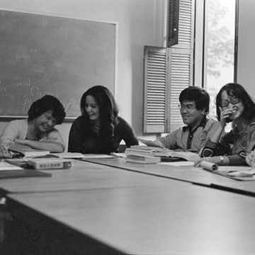
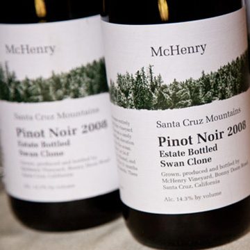

Home »
Schedule of events
Featured events
-

Launch! A Celebration of the UCSC
Student ExperienceFriday 6 - 9 p.m. | University Center
Cost: $50-150 Join us for a talk given by Leon Panetta, chairman of the Panetta Institute for Public Policy and former Secretary of Defense. -

Banana Slug Lunch: Dine and Rewind
Saturday 12 - 2 p.m. | Porter College Dining Hall - $20There was never a more original social network than the dining hall. Live it again. Reconnect with fellow Banana Slugs, remember good times, and make new memories over lunch.

-

Teach-Ins - An Academic Afternoon
Saturday 2:15 - 3:30 p.m. | Porter College RoomsGo back to class for an afternoon - choose from a selection of lectures from notable faculty:
• Bruce Thompson
• Alison Galloway
• Ed Green -

Alumni Wine Reception
Saturday 3:30 - 5:30 p.m. | Porter Dining Hall Patio Unwind with a glass of wine in the company of friends and reconnect with favorite faculty and staff.

-
APR
25FRIDAY - Institute for the Biology of Stem Cells Laboratory Tour and Discussion Forum
3:00 p.m. - 4:00 p.m. | Biomed, Rm 460 Please join us for a walking tour of the Institute for the Biology of Stem Cells (IBSC) laboratory facilities, which will highlight some of the key technology needed to carry out stem cell experimentation.
Find out more » | Click to register » - Graduate Alumni Cocktail Hour
5:00 p.m. - 7:00 p.m. | Graduate Student Commons Please join us in the Graduate Student Commons for Graduate Alumni Cocktail Hour! Reconnect with old friends and enjoy a refreshing cocktail while networking with other proud slugs.
Find out more » | Click to register »  Launch! A Celebration of the UCSC Student Experience
Launch! A Celebration of the UCSC Student Experience
Strolling Dinner, Leon Panetta keynote, and Dessert Reception
6:00 p.m. - 9:00 p.m. | University Center | Cost: $50-$150Join us for a strolling dinner where you will have the opportunity to interact with current students and learn about their projects and their future trajectories. After dinner, Leon Panetta, chairman of the Panetta Institute for Public Policy and former Secretary of Defense, is scheduled to speak. Continue the conversation and celebration over a delectable assortment of desserts and coffee.
Find out more » | Click to register »- Alumni Shabbat
6:15 p.m. - 9:00 p.m. | Santa Cruz Hillel, 222 Cardiff Place Santa Cruz, CA 95060 Please join us for Shabbat services and a home-cooked Shabbat meal. Nosh, mingle, share stories, and re-strengthen ties to fellow alums, Hillel, and UC Santa Cruz.
Find out more » | Click to register » - A Time to Remember: Honoring Black Alumni Past & Present
7:00 p.m. - 8:30 p.m. | Cervantes & Velasquez Conference Room, Bay Tree Conference CenterCome join UCSC's African/Black alumni and students to acknowledge the UCSC alumni and celebrate the opportunity for current students to network and coalesce.
Find out more » | Click to register » - Class of 2014, Senior Networking Mixer
7:00 p.m. - 9:00 p.m. | Motiv, 1209 Pacific Ave. The Senior Class Council of 2014 invites all young alumni to join them at Motiv in downtown Santa Cruz for a fun event filled with conversation, appetizers, and student support.
Find out more » | Click to register » -
APR 26
SATURDAY - Ira Fest — In honor of Computer Science Professor Emeritus Ira Pohl
9:00 a.m. - 4:30 p.m. | Baskin Engineering Auditorium, Room 101 Help us celebrate Ira Pohl’s retirement from 40 years tenure at UC Santa Cruz. This event will begin with coffee and refreshments at 9 am, followed by the first talk at 10 am. This seminar day event will feature a variety of fascinating speakers, some of whom have worked directly with Ira, and others who have worked in related areas that would be of particular interest to the UCSC community.
Find out more » | Click to register » - Econ Alumni Reception
10:00 a.m. - 11:00 a.m. | Engineering 2, Room 180 (Simularium) Please join us for our Econ Alumni Reception. Reconnect with fellow econ alums and learn about what is happening in the UC Santa Cruz Economics Department today.
Find out more » | Click to register » - Tour of the UCSC Farm
10:00 a.m. – 11:15 a.m. | UCSC Farm - Meet at Louise Cain Gatehouse Join us for a guided tour of the 30-acre UC Santa Cruz Farm to learn more about the latest information on education, research, and outreach taking place at the Farm and at the Alan Chadwick Garden.
Find out more » | Click to register » - The Lit Café: Coffee with Literature Department Faculty
10:00 a.m. - 11:30 a.m. | Porter College Provost House The Lit Cafe is an opportunity to visit with Literature Department faculty in the relaxed and intimate setting of the Porter Provost’s House. Reconnect with your favorite professors and meet new faculty who have joined the Department since your graduation.
Find out more » | Click to register » - Then and Now Alumni Walking Tour
10:00 a.m. - 11:30 a.m. | Meet at Porter Circle Revisit your favorite places and see what's new on campus. This student-led tour will highlight UCSC's latest prestigious achievements and fill you in on some new campus facts and figures.
Find out more » | Click to register » - Remembering Mary Holmes
10:00 a.m. - 11:30 a.m. | Page Smith Library, Cowell College Join us for a lecture remembering the legacy of founding faculty member, artist, and art historian Mary Holmes.
Find out more » | Click to register » - Campus Reserve Walkabout
10:00 a.m. – 12:00 p.m. | UC Campus Reserve, Meet at the Fire Station Parking lot Join us for a talk and walkabout on the UC Santa Cruz Campus Natural Reserve, which serves as an outdoor classroom and living laboratory.
Find out more » | Click to register » - Making and Documenting History at UCSC
10:00 a.m. - 12:00 p.m. | Special Collections, McHenry Library Please join us for an exploration of campus history and an opportunity to meet some of your favorite faculty and staff members who have been our Regional Oral History Project narrators.
Find out more » | Click to register » - Younger Lagoon Reserve – Habitat Restoration Workday
10:00 a.m. – 1:00 p.m. | Younger Lagoon Reserve - Meet at the big blue whale skeleton in front of the Seymour Marine Discovery Center Come join a day of habitat restoration and natural history interpretation at the scenic Younger Lagoon Reserve next to the Seymour Marine Discovery Center.
Find out more » | Click to register » - Philosophy Lecture and Discussion by Professor Jonathan Ellis
11:00 a.m. - 12:45 p.m. | Cowell, Rm 132 Please join us for a lecture on "The Challenge of Conviction: Lessons from Epistemology and the Philosophy of Psychology" by Professor Jonathan Ellis.
Find out more » | Click to register » - Banana Slug Lunch: Dine and Rewind
12:00 p.m. – 2:00 p.m. | Porter Dining Hall — $20 There was never a more original social network than the dining hall. Live it again. Reconnect with fellow Banana Slugs, remember good times, and make new memories over lunch.
Find out more » | Click to register » - Connecting the Generations: A Taste of the Past
12:00 p.m. - 3:00 p.m | Oakes Learning Center Come sit and enjoy lunch with UCSC African/Black alumni and students for an opportunity to engage in inter-generational learning, mentorship, guidance and support. There will be a collective symposium space for all participants and then we will break into two separate caucuses to address issues within the community.
Find out more » | Click to register » - Digital Arts & New Media MFA Exhibition
12:00 p.m. - 5:00 p.m | DARC Building UCSC's Digital Arts and New Media Department invites you to join in work and play in the form of video installations, interactive experiences, telematic performances, and sound art.
Find out more » | Click to register » - Reception honoring Frank Andrews
2:00 p.m. - 3:30 p.m. | Crown Provost House For 53 years, Professor Frank Andrews has touched the lives of many students, staff, and colleagues. Please join us for a gathering to honor Professor Andrews at the Crown Provost House.
Find out more » | Click to register » - Then and Now Alumni Walking Tour
2:00 p.m. - 3:30 p.m. | Meet at Porter Circle Revisit your favorite places and see what's new on campus. This student-led tour will highlight UCSC's latest prestigious achievements and fill you in on some new campus facts and figures.
Find out more » | Click to register » - Teach-Ins
2:15 - 3:30 p.m. | Porter College Rooms Go back to class for an afternoon – choose from a selection of lectures from notable faculty:
• Bruce Thompson – Spies: Espionage and Intelligence in the First and Second World Wars
• Alison Galloway – A Day in the Life of the Dead
• Ed Green – Genetics of Human Evolution
Find out more » | Click to register » - International Education Alumni Reception
2:30 p.m. - 4:00 p.m. | University Center – Levin Lanai If you were an international student or studied abroad during your time at UC Santa Cruz, please join us for the International Education Alumni Reception. Enjoy cultural performances from current students while networking with other international education alumni.
Find out more » | Click to register » - Tour the UCSC Arboretum & Wine Reception
2:30 p.m. - 4:30 p.m. | UCSC Arboretum Join Arboretum staff and volunteers for a tour and wine reception at the UC Santa Cruz Arboretum, a spectacular living collection.
Find out more » | Click to register » - College Eight Sustainability Tour
3:00 p.m. - 5:00 p.m. | Meet in the College Eight plaza Explore the many sustainability programs at UC Santa Cruz, meet current students, and learn what everyone can do to help the campus become a living lab for sustainability.
Find out more » | Click to register » - Crown Alumni Reception
3:30 p.m. - 5:00 p.m. | Crown Provost House Please join us at the Crown Provost House for an alumni reception where you may reconnect with past Crownies and also meet new friends.
Find out more » | Click to register » - Alumni Wine Reception
3:30 p.m. – 5:30 p.m. | Porter Dining Hall Patio Unwind with a glass of wine in the company of friends and reconnect with favorite faculty and staff.
Find out more » | Click to register » - Lavender Reception
4:00 p.m. - 5:30 p.m. | Cantú Queer Center, Merrill College Come join fellow GLBTI alumni, students, and the Cantú Queer Center staff for our annual Lavender Reception.
Find out more » | Click to register » - Three Lives in Photography: Robert Dawson, Joel Leivick, David Pace
5:00 p.m. - 6:00 p.m. | Mary Porter Sesnon Art Gallery Join fellow alumni and art lovers for a reception and gallery walk-through with three UC Santa Cruz alumni photographers, Robert Dawson, Joel Leivick, and David Pace.
Find out more » | Click to register » - Natural History Field Quarter Happy Hour Celebration
5:00 p.m. - 7:00 p.m. | Rosie McCann's Irish Pub, 1220 Pacific Ave, Santa Cruz Come join alums and staff of the Natural History Field Quarter and help us inaugurate a new group, The Friends of the Norris Natural History Programs. We'll be celebrating exciting news around the future of Field Quarter, the UCSC Natural History Museum and the Environmental Field Program. Share your ideas, toast the future, and reminisce with great folks at Rosie McCann's Irish pub.
Find out more » | Click to register » - SOMeCA 25th Anniversary
6:00 p.m. - 9:00 p.m. | Cowell Dining Hall We invite current student leadership to a special dinner discussion with former student organizers and current community leaders. This year we will be celebrating 25 years of SOAR at UC Santa Cruz.
Find out more » | Click to register » - Lick Observatory History and Telescope Viewing
8:00 p.m. - 11:00 p.m. | Lick Observatory, Mount Hamilton | Cost: $100 Please join us for a fascinating lecture about James Lick and the history of the observatory, followed by viewing through our telescopes: the 36-inch Lick Refractor and/or the 40-inch Nickel Reflector.
Find out more » | Click to register » -
APR 27
SUNDAY - Morning Tour of the UCSC Arboretum 9:00 a.m. - 10:00 a.m. | UCSC ArboretumJoin us for a lovely tour of the Arboretum. See native flora from around the globe while reconnecting with fellow alums, Arboretum staff, and volunteers.
Find out more » | Click to register » - Brunch with the Merrill Provost
9:30 a.m. – 11:00 a.m. | Merrill Provost House Please join fellow Merrill alumni for a brunch with Provost Elizabeth Abrams at the Merrill Provost House.
Find out more » | Click to register » - Cowell Brunch and Service of Remembrance
10:00 a.m. – 12:15 a.m. | Cowell Provost House Lawn Please join us for a free brunch welcoming all Cowell alumni and friends. Gather on the lawn of the beautiful Cowell Provost House and enjoy the company of the Cowell community while reveling in the breathtaking views of the Monterey Bay. Following the Cowell Brunch, we invite you to an intimate gathering of remembrance to honor all those who have passed in the last year.
Find out more » | Click to register » - Stevenson Alumni Brunch and Career Panel
10:00 a.m. - 12:00 p.m. | Stevenson Provost HousePlease join Provost Alice Yang at her home for the Stevenson Alumni Brunch and Career Panel. Reconnect with fellow alumni, meet current students, and enjoy a delicious meal together.
Find out more » | Click to register » - Merrill by the Decades
9:30 a.m. - 11:00 a.m. | Merrill Provost House Please join alumni, staff, students, faculty, and fellows for a discussion and celebration of Merrill Student Social Activism.
Find out more » | Click to register » - Digital Arts and New Media MFA Exhibition
12:00 p.m. - 5:00 p.m. | DARC Building UCSC's Digital Arts and New Media Department invites you to join in work and play in the form of video installations, interactive experiences, telematic performances, and sound art.
Find out more » | Click to register » - Dizikes Concert
12:30 p.m. - 1:30 p.m. | Mary Holmes Fireside Lounge (Formerly Cowell Fireside Lounge)Join us for this year's annual Dizikes Concert, the world premiere of a chamber oratorio inspired by the paintings of Mary Holmes, based on the Greek myth as told by Ovid and Moschus. Come enjoy music by Peter Josheff, and Libretto by Bay Area soprano Eliza O'Malley, granddaughter of Mary Holmes and Peter Josheff. She will be joined by tenor Brian Thorsett, conductor Jonathan Khuner and the Sonic Harvest Players.
Find out more » | Click to register »
- Home
- Photo Galleries
- Events/Registration
- Hotels
- Parking and Shuttles
- Share Your Photos
- Social Stream
Events Schedule
View on mobile/tablet devices or download PDF version
» View Mobile VersionYou can bookmark or add to home screen on your mobile device. » Download PDF Version
Alumni Weekend 2014
Brought to you by:
Special Events Office
UC Santa Cruz
2155 Delaware Avenue
Santa Cruz, CA 95060
Email: specialevents@ucsc.edu
Phone: (831) 459-5003